9. Visual Guide: Git Tree Progression¶
See how the commit graph evolves as you perform Git operations.
Initial Repository¶
Your first commit creates a single node in the graph:
C1 ← main
Linear History¶
As you commit changes, the chain grows:
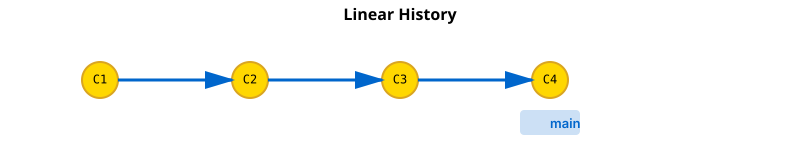
Creating a Branch¶
When you create a branch, it's just a pointer to the current commit:
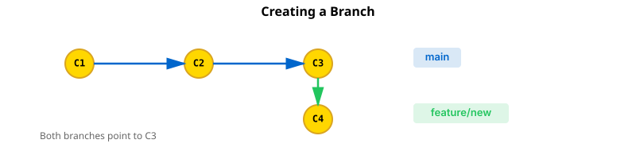
Both branches point to C3. When you commit on the branch, it advances while main stays behind. The branches have diverged. C3 is their common ancestor.
Merging (Fast-Forward)¶
If main hasn't changed since you branched, Git can fast-forward:
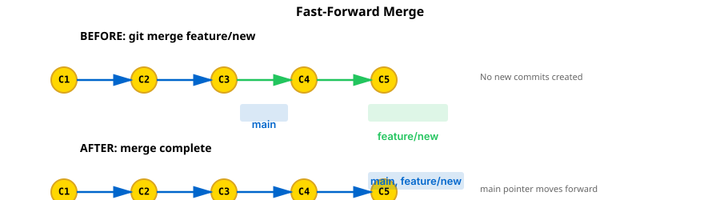
The main branch pointer moves forward to C5. No new commit is created.
Merging (Non-Fast-Forward)¶
If main has new commits, a merge commit is created:
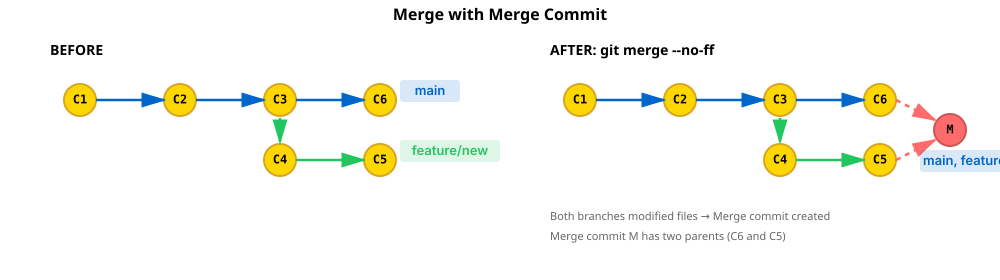
A merge commit M (shown in red) has two parents: C6 and C5. Both branches now point to M.
Rebasing¶
Rebasing replays your commits on top of another branch:
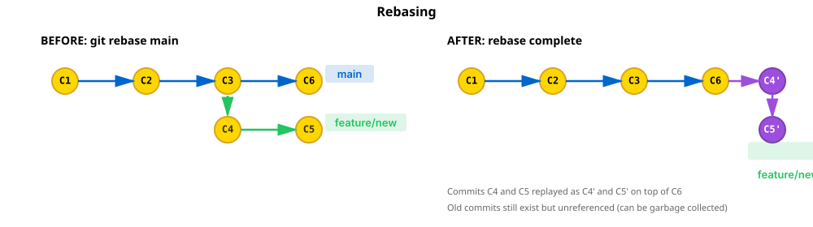
C4 and C5 are replayed as C4' and C5' (shown in purple) on top of C6. They have new hashes because their parent changed. The old C4 and C5 are no longer referenced (can be garbage collected).
Result After Rebase + Fast-Forward Merge¶
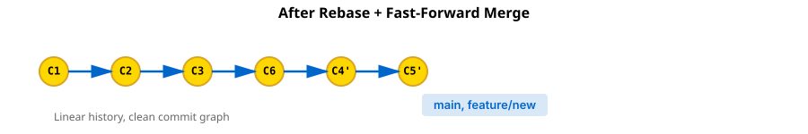
Linear history, clean commit graph.
Cherry-Pick¶
Cherry-pick copies a specific commit onto another branch:
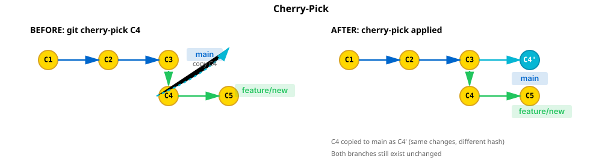
C4 is copied as C4' (new hash, shown in cyan) onto main. Both branches still exist unchanged. The original C4 and C5 remain on the feature branch.
Detached HEAD¶
When you checkout a specific commit instead of a branch, HEAD points directly to the commit:
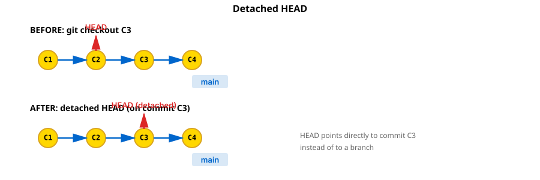
If you make new commits in detached HEAD, they're not on any branch. For example:
C1 ← C2 ← C3 ← C4 ← main
↑
C5 ← C6 ← HEAD (detached)
If you switch away without creating a branch, C5 and C6 become unreferenced (but recoverable via reflog).
Multiple Branches¶
Complex projects often have multiple feature branches:
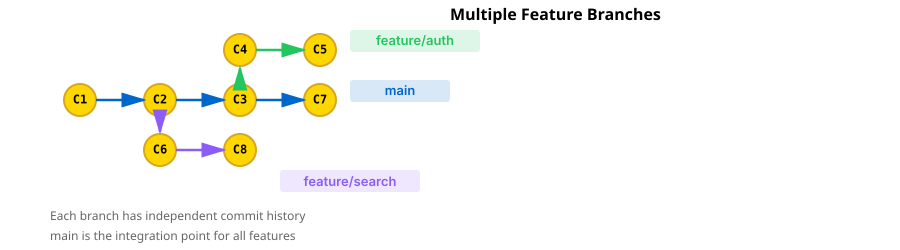
Each branch has its own commit history. main is the integration point.
Merge Conflicts¶
When branches modify the same lines, a merge conflict occurs:
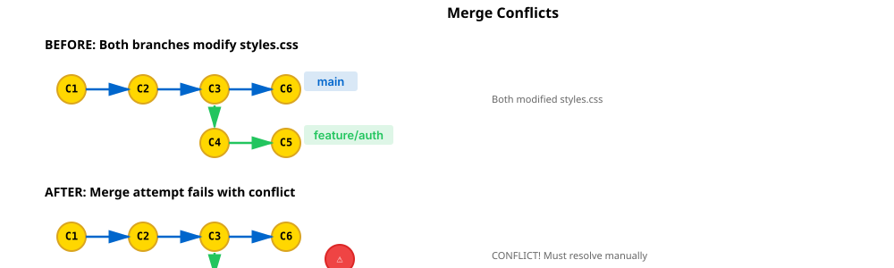
You resolve the conflict manually, then create a merge commit.
Undoing Commits (Reset)¶
Reset moves the branch pointer back:

The commits are discarded from the branch perspective but recoverable via reflog.
Reverting Commits¶
Revert creates a new commit that undoes a previous one:
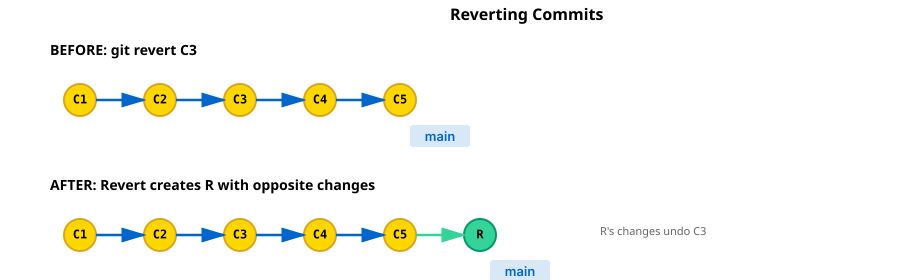
The original commits stay in history. R is a normal new commit.
Amending the Last Commit¶
Amend modifies the most recent commit:
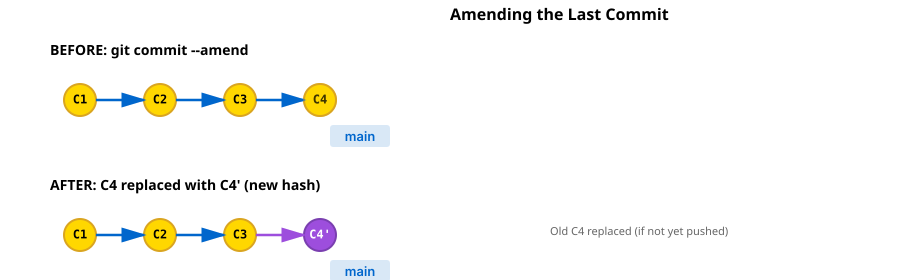
If C4 hasn't been pushed, only your local history changes. If it's been pushed, you'll need to force-push (dangerous!).
Push and Fetch¶
When you push, the remote's commit graph updates:
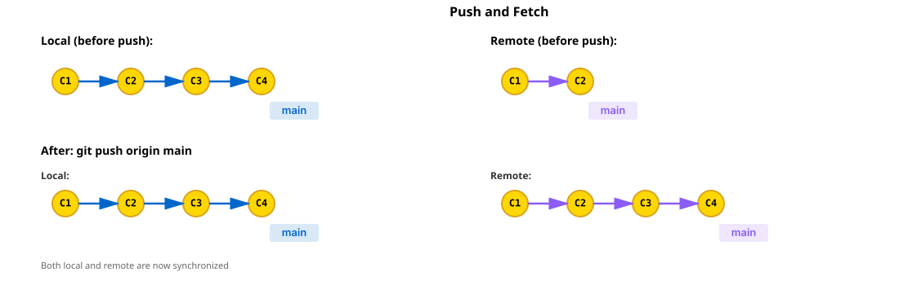
Both are now synchronized. Remote tracking branches update when you fetch.
A Real Workflow¶
Here's how a typical team workflow evolves:

The workflow in steps: 1. Both Alice and Bob branch off from C1 independently 2. Alice works on feature/auth (C4, C5), Bob works on feature/search (C6, C8) 3. Alice's PR is approved and merged to main (creating merge commit M) 4. Bob fetches the updated main and rebases feature/search (C6 becomes C6') 5. Bob's PR is approved and merged to main (creating merge commit M2) 6. And the cycle continues...
This pattern allows multiple developers to work in parallel without stepping on each other's toes.
Key Takeaways¶
- Commits form a DAG — Each commit points to its parent(s)
- Branches are pointers — Moving a branch pointer doesn't change commits
- Merges create branches — Merge commits have multiple parents
- Rebasing replays commits — Creates new commits with different hashes
- History is immutable — Old commits stay accessible via reflog
- Conflicts happen when — Two branches modify the same lines
Visual Patterns to Remember¶
Linear history: C1 ← C2 ← C3 ← C4
Branching: C3 ← C4 ← feature
↙
C1 ← C2 ← main
Merging: C3 ← C4 ⟲
↙ ↘
C1 ← C2 ← M ← main
Rebasing: C1 ← C2 ← C3' ← C4' ← feature
↑
main
These patterns repeat in every Git workflow. Understanding them helps you predict what your commit graph will look like after each operation.